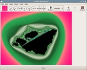

Features
 Unlimited variety. Most fractal programs provide a
fixed set of formulas. Gnofract 4D's formula compiler allows
you to use any function you can think of. It also supports
Fractint and UltraFractal formulas and coloring algorithms so you can
use the many thousands of formulas written for those packages.
Take a look at the
Gallery for some examples.
Unlimited variety. Most fractal programs provide a
fixed set of formulas. Gnofract 4D's formula compiler allows
you to use any function you can think of. It also supports
Fractint and UltraFractal formulas and coloring algorithms so you can
use the many thousands of formulas written for those packages.
Take a look at the
Gallery for some examples.
 Innumerable options. Each base fractal can be displayed in millions of
ways, using many coloring algorithms, including old favorites like
biomorph, powerful options like Orbit Traps, and unique methods like
Hot and Cold. Display multiple fixed points, critical values, or
other regions using the "fate" option.
Innumerable options. Each base fractal can be displayed in millions of
ways, using many coloring algorithms, including old favorites like
biomorph, powerful options like Orbit Traps, and unique methods like
Hot and Cold. Display multiple fixed points, critical values, or
other regions using the "fate" option.
 Easy-to-use interface. Modern interface (using the GTK
toolkit) with unlimited undo, full-screen mode, simple interaction,
and quick previews. Click here for an interface tour with more screenshots.
Easy-to-use interface. Modern interface (using the GTK
toolkit) with unlimited undo, full-screen mode, simple interaction,
and quick previews. Click here for an interface tour with more screenshots.
Fast calculations.Since all formulas are compiled to machine code before being run, you get snappy calculations even on complex custom formulas. If you have a multi-processor, hyperthreaded, or multi-core computer, Gnofract 4D will take full advantage of it for even faster calculations.
 Four dimensions. What sets it apart from other fractal programs (and makes it "4D") is the way that it treats the Mandelbrot and Julia sets as different views of the same four-dimensional fractal object. This allows you to create images which are a cross between the two sets and explore their inter-relationships. If you'd like to know some more about the maths, you can find details in the user's manual.
{kind=link}
High quality output. 24-bit color rendering, coloring methods for smooth gradients, antialiasing, and no limit on output size. The images below show the difference - the first is generated by Fractint, the second by Gnofract 4D.


 Find cool images quickly and share them with other users.
Explorer Mode and AutoZoom help you find interesting parts of the
fractal automatically. You can post the results to the user gallery on
the web directly from the program.
Find cool images quickly and share them with other users.
Explorer Mode and AutoZoom help you find interesting parts of the
fractal automatically. You can post the results to the user gallery on
the web directly from the program.
Popular and widely used. Over 30,000 downloads to date. Actively developed, with over 20 releases over the past 7 years. Currently the most popular fractal program listed on freshmeat.net. Included in FreeBSD ports tree and Fedora Extras.
 Linux Format magazine said: "Hot Pick!... lovely crisp rendering... the
abundance of alternative colour schemes is superb... great fun to just
play around with."
Linux Format magazine said: "Hot Pick!... lovely crisp rendering... the
abundance of alternative colour schemes is superb... great fun to just
play around with."